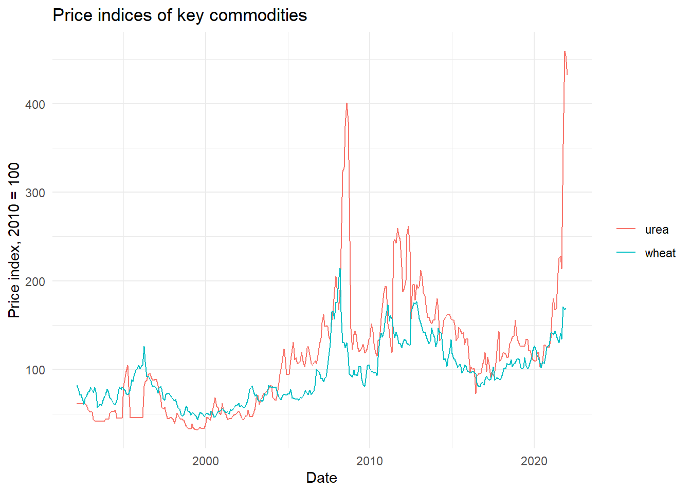

library(tidyverse)
library(readr) # install.packages("readr")
library(readxl) # install.packages("readxl")
library(janitor) # install.packages("janitor")
library(skimr) # install.packages("skimr")
library(lubridate) # install.packages("lubridate")
ggplot2::theme_set(ggplot2::theme_minimal())
knitr::opts_chunk$set(out.width = 60)AE03-03 Correlation
Setups
Data import and cleaning
Importing and cleaning data in the wide format
Practically the same procedure that we did in the previous exercise.
p_wd <-
read_excel("data/commodity-prices.xlsx", sheet = "data") %>%
clean_names() %>%
rename(wheat = soft_red_winter_wheat_no_2_f_o_b_us_gulf_usd_per_mt,
maize = yellow_maize_no_2_f_o_b_us_gulf_usd_per_mt,
date = day_month_year,
oil = crude_oil_brent_usd_per_barrel,
urea = urea_f_o_b_black_sea_usd_per_mt) %>%
slice(-1) %>%
mutate(
oil = as.numeric(oil),
wheat = as.numeric(wheat),
maize = as.numeric(maize),
urea = as.numeric(urea),
date = convert_to_date(date)
)
glimpse(p_wd)Rows: 359
Columns: 5
$ date <date> 1992-03-01, 1992-04-01, 1992-05-01, 1992-06-01, 1992-07-01, 199…
$ oil <dbl> 17.45, 18.63, 19.50, 20.83, 20.17, 19.62, 20.15, 20.08, 18.88, 1…
$ wheat <dbl> 161.44, 153.07, 139.72, 140.36, 129.93, 118.80, 131.47, 137.42, …
$ maize <dbl> 117.00, 108.52, 109.64, 110.90, 102.75, 96.96, 98.05, 95.11, 94.…
$ urea <dbl> 120.00, 120.00, 120.00, 120.00, 120.00, 120.00, 120.00, 116.88, …Converting data to the long format
p_lg <-
p_wd %>%
pivot_longer(cols = c(oil:urea),
names_to = "var",
values_to = "price") %>%
arrange(date, var)
glimpse(p_lg)Rows: 1,436
Columns: 3
$ date <date> 1992-03-01, 1992-03-01, 1992-03-01, 1992-03-01, 1992-04-01, 199…
$ var <chr> "maize", "oil", "urea", "wheat", "maize", "oil", "urea", "wheat"…
$ price <dbl> 117.00, 17.45, 120.00, 161.44, 108.52, 18.63, 120.00, 153.07, 10…Example: Computing prices index with some base
Index of a variable with a base is a mathematical transformation of a variable, where each value of a variable is divided by the base value and then multiplied by 100.
\[ {I}_{i} = \frac{x_i}{x_{base}} \times 100 \]
This is easy in Excel, but tricky without it!
Let us demonstrate the logic of calculations based on a simple example of 2 commodities (wheat and urea) and few month in year 2010.
Step 1. Filter a sub-sample
As discussed above, we want to:
filter data, where year is 2010, month less than 6, var is "wheat" or "maize"
Which identically translate into R code as:
filter(data, year(date) == 2010, month(date) < 6, var %in% c("wheat", "maize"))`filter data, where year is 2010, month less than 6, var is "wheat" or "maize"
p_lg_sb <-
filter(p_lg,
year(date) == 2010,
month(date) < 6,
var %in% c("wheat", "maize")) %>%
arrange(var, date)
p_lg_sb# A tibble: 10 × 3
date var price
<date> <chr> <dbl>
1 2010-01-01 maize 167.
2 2010-02-01 maize 162.
3 2010-03-01 maize 159.
4 2010-04-01 maize 157.
5 2010-05-01 maize 163.
6 2010-01-01 wheat 199.
7 2010-02-01 wheat 192.
8 2010-03-01 wheat 190.
9 2010-04-01 wheat 188.
10 2010-05-01 wheat 190.Step 2. Create variable with the base for indexing
Here we want to:
for each groups of commodities "var", mutate variable "base", which is equal to "price" when month is equal to 1 and year is equal to 2010.
In language of R this is:
p_lg_sb %>%
group_by(var) %>% # 1. for each groups of commodities "var"
mutate( # 2. mutate
base = ifelse( # 3. variable "base", which is equal to
month(date) == 1 & # 5. when month is equal to 1 and
year(date) == 2010, # 6. year is equal to 2010
price, # 4. "price"
NA # 7. missing value is in other cases
)
)# A tibble: 10 × 4
# Groups: var [2]
date var price base
<date> <chr> <dbl> <dbl>
1 2010-01-01 maize 167. 167.
2 2010-02-01 maize 162. NA
3 2010-03-01 maize 159. NA
4 2010-04-01 maize 157. NA
5 2010-05-01 maize 163. NA
6 2010-01-01 wheat 199. 199.
7 2010-02-01 wheat 192. NA
8 2010-03-01 wheat 190. NA
9 2010-04-01 wheat 188. NA
10 2010-05-01 wheat 190. NA Step 3. Make sure that base is the same for all observations in each group var
p_lg_sb %>%
group_by(var) %>%
mutate(base = ifelse(month(date) == 1 & year(date) == 2010, price, NA)) %>%
tidyr::fill(base, .direction = "updown")# A tibble: 10 × 4
# Groups: var [2]
date var price base
<date> <chr> <dbl> <dbl>
1 2010-01-01 maize 167. 167.
2 2010-02-01 maize 162. 167.
3 2010-03-01 maize 159. 167.
4 2010-04-01 maize 157. 167.
5 2010-05-01 maize 163. 167.
6 2010-01-01 wheat 199. 199.
7 2010-02-01 wheat 192. 199.
8 2010-03-01 wheat 190. 199.
9 2010-04-01 wheat 188. 199.
10 2010-05-01 wheat 190. 199.Step 4. Calculate index
p_lg_sb %>%
group_by(var) %>%
mutate(base = ifelse(month(date) == 1 & year(date) == 2010, price, NA)) %>%
tidyr::fill(base, .direction = "updown") %>%
mutate(index = price / base * 100)# A tibble: 10 × 5
# Groups: var [2]
date var price base index
<date> <chr> <dbl> <dbl> <dbl>
1 2010-01-01 maize 167. 167. 100
2 2010-02-01 maize 162. 167. 96.7
3 2010-03-01 maize 159. 167. 95.1
4 2010-04-01 maize 157. 167. 93.9
5 2010-05-01 maize 163. 167. 97.7
6 2010-01-01 wheat 199. 199. 100
7 2010-02-01 wheat 192. 199. 96.5
8 2010-03-01 wheat 190. 199. 95.6
9 2010-04-01 wheat 188. 199. 94.5
10 2010-05-01 wheat 190. 199. 95.7Optional example: calculate index, where base is average of month 2 and 3
p_lg_sb %>%
group_by(var) %>%
mutate(base = ifelse(month(date) %in% c(2,3) &
year(date) == 2010,
price,
NA)) %>%
mutate(base_full = mean(base, na.rm = TRUE)) %>%
mutate(index = price / base_full * 100)# A tibble: 10 × 6
# Groups: var [2]
date var price base base_full index
<date> <chr> <dbl> <dbl> <dbl> <dbl>
1 2010-01-01 maize 167. NA 160. 104.
2 2010-02-01 maize 162. 162. 160. 101.
3 2010-03-01 maize 159. 159. 160. 99.1
4 2010-04-01 maize 157. NA 160. 97.9
5 2010-05-01 maize 163. NA 160. 102.
6 2010-01-01 wheat 199. NA 191. 104.
7 2010-02-01 wheat 192. 192. 191. 100.
8 2010-03-01 wheat 190. 190. 191. 99.5
9 2010-04-01 wheat 188. NA 191. 98.4
10 2010-05-01 wheat 190. NA 191. 99.7Note, we specify mean(…, na.rm = TRUE) because when we compute mean, there are some missing observations in the variable. Mean of a vector with missing observation will return NA.
mean(c(1, 2, 3, 4, NA))[1] NAIf we specify parameter to ignore NA in the data, we will get a result:
mean(c(1, 2, 3, 4, NA), na.rm = TRUE)[1] 2.5Exercise 1. Compute prices index with base mean prices in 2010
Following the previous examples, let us compute:
- Step 1. for each group of
var; - Step 2. mutate
base_part, which containspriceifyearis 2010 andNAin else cases; - Step 3. mutate
basewith themean()value ofbase_partprice with parameterna.rm = TRUE; - Step 4. mutate price
indexagainst suchbase; - Step 5. ungroup data
- Step 6. select variables
date,var,priceandindex
# p_index <-
# p_lg %>%
# ________() %>% # step 1.
# ______( # step 2.
# base_part =
# ifelse(year(_____) == 2010, price, ____)
# ) %>%
# ______( # step 3.
# base = ______(_______, na.rm = TRUE)
# ) %>%
# mutate(index = ____ / _____ * 100) %>% # step 4.
# ungroup() %>% # step 5.
# select(date, var, price, index) # step 6.
#
# glimpse(p_index)Exercise 2. Plot time series of indexes for wheat and urea
Before plotting we need to filter var when it is %in% "wehat" or "urea";
Remember from the previous exercises: ggplot() + aes() + geom_path()
- Use
labs(x = "", y = "", title = "")to give meaningful labels to the plot.
# p_index %>%
# ______(var %in% c("wheat", ______)) %>%
# ______() +
# aes(x = _____, y = _______, colour = var) +
# geom_path() +
# labs()Answer the following questions:
Can we conclude, based on the plot, that surging prices of
ureacause thewheatprices to surge?What could be a theoretical explanation for this?
What could be the theoretical mechanism of
ureaprices effect onwheat?
Exercise 3. Build a correlation table between price indices of different commodities
First, we need to convert our data to wide format again:
# p_index_wd <-
# p_index %>%
# pivot_wider(names_from = var, values_from = c(price, index))
# glimpse(p_index_wd)To make a correlation table, we use package correlation and a function with the same name. We use summary to convert correlation table with extensive results to a compact matrix
- We
selectonly those variables, where namescontains()stringindex.
library(correlation)
# p_index_wd %>%
# select(contains("index")) %>%
# correlation() %>%
# summary()
# p_index_wd %>%
# select(contains("price")) %>%
# correlation() %>%
# summary()- Does this correlation coefficients suggests about causation if we assume that theory does justifies causal relationship?
Run the same correlations but without summary(). What are the differences?
# p_index_wd %>%
# ______(_______("index")) %>%
# _________()
# ______ %>%
# ______(______("price")) %>%
# ______() Exercise 4. Compute a first difference of indices with lag 1
First difference is a change of value in the next period, compared to the previous one. To compute it, we use function lag() and perform similar mutate operations.
Simple example of a first difference
Before, we computed index in the following way:
p_lg_sb %>%
group_by(var) %>%
mutate(base = ifelse(month(date) == 1 & year(date) == 2010, price, NA)) %>%
tidyr::fill(base, .direction = "updown") %>%
mutate(index = price / base * 100)# A tibble: 10 × 5
# Groups: var [2]
date var price base index
<date> <chr> <dbl> <dbl> <dbl>
1 2010-01-01 maize 167. 167. 100
2 2010-02-01 maize 162. 167. 96.7
3 2010-03-01 maize 159. 167. 95.1
4 2010-04-01 maize 157. 167. 93.9
5 2010-05-01 maize 163. 167. 97.7
6 2010-01-01 wheat 199. 199. 100
7 2010-02-01 wheat 192. 199. 96.5
8 2010-03-01 wheat 190. 199. 95.6
9 2010-04-01 wheat 188. 199. 94.5
10 2010-05-01 wheat 190. 199. 95.7let us mutate() the index_fd variable:
p_lg_sb %>%
group_by(var) %>%
mutate(base = ifelse(month(date) == 1 & year(date) == 2010, price, NA)) %>%
tidyr::fill(base, .direction = "updown") %>%
mutate(index = price / base * 100) %>%
mutate(index_fd = index - lag(index))# A tibble: 10 × 6
# Groups: var [2]
date var price base index index_fd
<date> <chr> <dbl> <dbl> <dbl> <dbl>
1 2010-01-01 maize 167. 167. 100 NA
2 2010-02-01 maize 162. 167. 96.7 -3.29
3 2010-03-01 maize 159. 167. 95.1 -1.64
4 2010-04-01 maize 157. 167. 93.9 -1.18
5 2010-05-01 maize 163. 167. 97.7 3.77
6 2010-01-01 wheat 199. 199. 100 NA
7 2010-02-01 wheat 192. 199. 96.5 -3.51
8 2010-03-01 wheat 190. 199. 95.6 -0.926
9 2010-04-01 wheat 188. 199. 94.5 -1.11
10 2010-05-01 wheat 190. 199. 95.7 1.29 Using simple example, let us compute the first difference of the index for the entire data.
# p_index_fd <-
# ______ %>%
# group_by(______) %>%
# mutate(index_fd = ______ - lag(______)) %>%
# ungroup() %>%
# select(date, var, index_fd) %>%
# pivot_wider(names_from = var,
# values_from = c(index_fd))
#
# p_index_fd %>%
# glimpse()Exercise 5. Build a correlation table between first differences of indices for different commodities
As the same exercise before, we use correlation package and the same function.
# p_index_fd %>%
# correlation() %>%
# summary()Based on this results, does urea prices causes surges in the wheat prices?
What kind of causal relationship could be there?
Exercise 6. Compute first differences with lag 2 and 3
# p_index_fd_lags <-
# p_index %>%
# group_by(var) %>%
# mutate(fd = index - lag(index, 1)) %>%
# ungroup() %>%
# select(date, var, contains("fd")) %>%
# pivot_wider(names_from = var,
# values_from = c(contains("fd"))) %>%
# mutate(urea_fd1 = urea,
# urea_fd2 = lag(urea, 2),
# urea_fd3 = lag(urea, 3),
# urea_fd4 = lag(urea, 4),
# urea_fd5 = lag(urea, 5)
# )
#
# correlation(p_index_fd_lags) %>% summary()Solutions
p_wd <-
read_excel("data/commodity-prices.xlsx", sheet = "data") %>%
clean_names() %>%
rename(wheat = soft_red_winter_wheat_no_2_f_o_b_us_gulf_usd_per_mt,
maize = yellow_maize_no_2_f_o_b_us_gulf_usd_per_mt,
date = day_month_year,
oil = crude_oil_brent_usd_per_barrel,
urea = urea_f_o_b_black_sea_usd_per_mt) %>%
slice(-1) %>%
mutate(
oil = as.numeric(oil),
wheat = as.numeric(wheat),
maize = as.numeric(maize),
urea = as.numeric(urea),
date = convert_to_date(date)
)
p_lg <-
p_wd %>%
pivot_longer(cols = c(oil:urea),
names_to = "var",
values_to = "price") %>%
arrange(var, date)Ex. 1
p_index <-
p_lg %>%
group_by() %>% # step 1.
mutate( # step 2.
base_part =
ifelse(year(date) == 2010, price, NA)
) %>%
mutate( # step 3.
base = mean(base_part, na.rm = TRUE)
) %>%
mutate(index = price / base * 100) %>% # step 4.
ungroup() %>% # step 5.
select(date, var, price, index) # step 6.
glimpse(p_index)Rows: 1,436
Columns: 4
$ date <date> 1992-03-01, 1992-04-01, 1992-05-01, 1992-06-01, 1992-07-01, 199…
$ var <chr> "maize", "maize", "maize", "maize", "maize", "maize", "maize", "…
$ price <dbl> 117.00, 108.52, 109.64, 110.90, 102.75, 96.96, 98.05, 95.11, 94.…
$ index <dbl> 59.72918, 55.40009, 55.97185, 56.61509, 52.45447, 49.49864, 50.0…Ex. 2
p_index %>%
filter(var %in% c("wheat", "urea")) %>%
ggplot() +
aes(x = date, y = index, colour = var) +
geom_path() +
labs(x = "Date", y = "Price index, 2010 = 100",
title = "Price indices of key commodities",
colour = NULL)Warning: Removed 1 row containing missing values or values outside the scale range
(`geom_path()`).
Ex. 3
p_index_wd <-
p_index %>%
pivot_wider(names_from = var, values_from = c(price, index))
library(correlation)
p_index_wd %>%
select(contains("index")) %>%
correlation() %>%
summary()# Correlation Matrix (pearson-method)
Parameter | index_wheat | index_urea | index_oil
--------------------------------------------------
index_maize | 0.89*** | 0.77*** | 0.81***
index_oil | 0.79*** | 0.80*** |
index_urea | 0.76*** | |
p-value adjustment method: Holm (1979)p_index_wd %>%
select(contains("price")) %>%
correlation() %>%
summary()# Correlation Matrix (pearson-method)
Parameter | price_wheat | price_urea | price_oil
--------------------------------------------------
price_maize | 0.89*** | 0.77*** | 0.81***
price_oil | 0.79*** | 0.80*** |
price_urea | 0.76*** | |
p-value adjustment method: Holm (1979)Ex. 4
p_index_fd <-
p_index %>%
group_by(var) %>%
mutate(index_fd = index - lag(index)) %>%
ungroup() %>%
select(date, var, index_fd) %>%
pivot_wider(names_from = var,
values_from = c(index_fd))